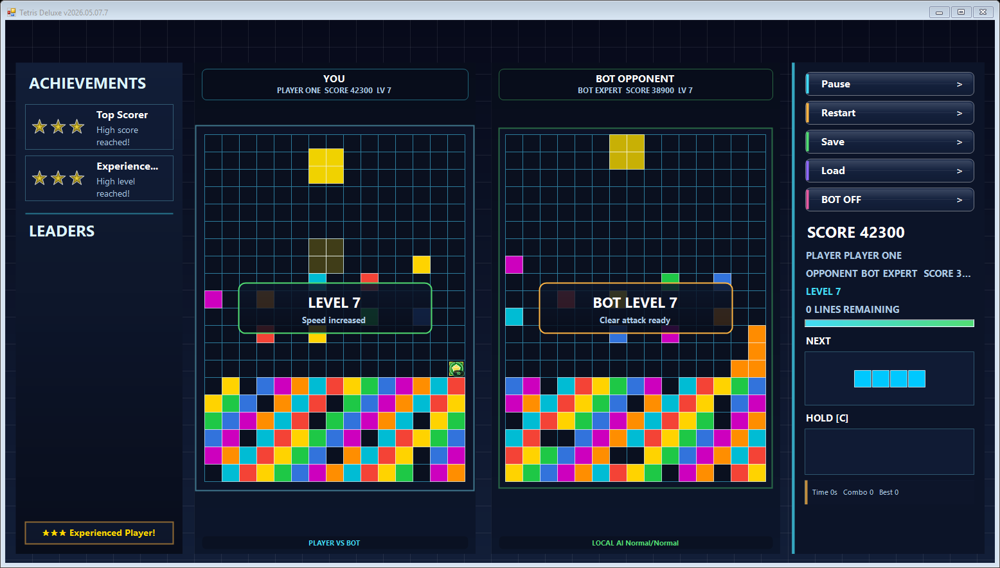
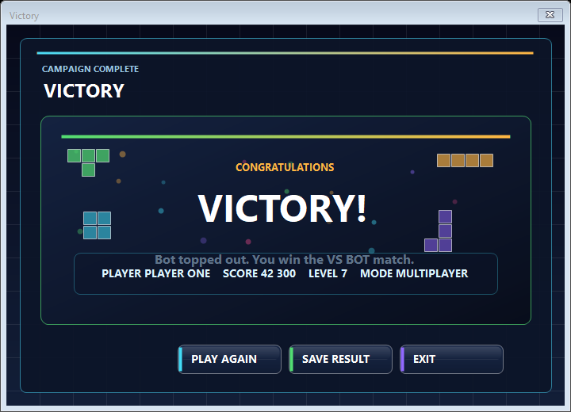

Equal player and bot fields, separate bot skill and pace, fairer scoring, and field-level events.
Free · No installer · No ads · Windows
Tetris Deluxe
Beat the bot on equal boards, complete missions under the clock, or survive the marathon. Four modes, power-ups, and WiFi play — one ZIP, just unzip and run.

From score runs to survival pressure, mission objectives, local VS BOT, and WiFi play.
Grab the Windows ZIP from the latest release, extract it, and run the game directly.
What's inside
More than a Tetris clone
Built on top of classic Tetris rules with extra mechanics that change how the game plays and feels.
Pick a challenge — clear lines against a clock, score big before pieces run out, or level up before time expires. Beat it or restart.
Bombs blow rows apart. Slow-down freezes the clock. Double-points stacks on every clear. They spawn live on the board — grab them or let them pass.
Face a bot on an identical board — same pieces, same rules, same pressure. Tune skill and speed separately to find the difficulty that actually challenges you.
Host a room, share your LAN IP, play side by side. Every multi-line clear sends garbage to the opponent. First to top out loses.
No objectives, no time limit — just escalating speed until the stack hits the ceiling. See how deep you can go.
Screenshots
Gallery



← → arrow keys · swipe on mobile
Setup
Up and running in seconds
1
Download
Get the latest release ZIP from GitHub using the button below.
2
Extract
Unzip the archive to any folder. No installer, no admin rights needed.
3
Play
Run TetrisGame.exe and pick a mode from the menu.
Community
Comments and feedback
Write what feels weak, what is confusing, what broke, or what should come next. General comments go to Discussions; concrete bugs go to Issues.